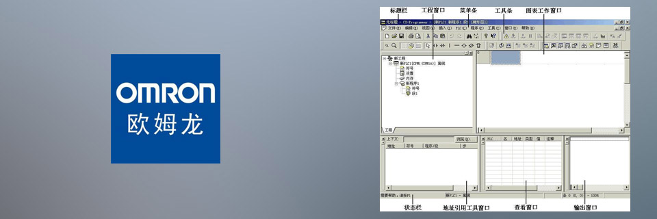

WebAccess
研华WebAccess软件是研华物联网应用平台解决方案的核心，为用户提供一个基于HTML5技术用户界面，实现跨平台、跨浏览器的数据访问体验。使用WebAccess后，用户可以建立一个信息管理平台，同步提高垂直市场管理发展的效率。
研华WebAccess提供了一个基于HTML5的智能仪表板作为下一代WebAccess的人机界面。其中，小部件功能可以让系统集成商通过分析图表和图形用仪表板编辑器来创建自定义信息页面。在创建仪表板界面之后，最终用户可以通过仪表板查看器来查看数据与以及可以在电脑，Mac，平板电脑和智能手机通过任何浏览器无缝观看体验。 (摘自：研华官网)
最新版本：9.0
百度网盘 (提取码：aeaw)
QQ群号：186381391 
WinCC / TIA博途
SIMATIC WinCC是由西门子Siemens推出的一款基于Windows平台可视化组态软件，它为用户提供了完整的监控和数据采集系统(SCADA)功能，可以完整地应用于各类工业开发领域，拥有简单、高度灵活、透明、开放的特点。 (摘自：网络)
最新版本：7.5
百度网盘 (提取码：v2w1)
TIA博途是全集成自动化软件TIA portal的简称，是西门子工业自动化集团发布的一款全新的全集成自动化软件。它是业内首个采用统一的工程组态和软件项目环境的自动化软件，几乎适用于所有自动化任务。借助该全新的工程技术软件平台，用户能够快速、直观地开发和调试自动化系统。 (摘自：百度百科)
最新版本：V17
百度网盘 (提取码：v2w1)
QQ群号1：245286129 QQ群号2：245286056
ifix
iFIX是全球最领先的HMI/SCADA自动化监控组态软件，已有超过300，000套以上的软件在全球运行。世界上许多最成功的制造商都依靠 GE Fanuc的iFIX软件来全面监控和分布管理全厂范围的生产数据。在包括冶金、电力、石油化工、制药、生物技术、包装、食品饮料、石油天然气等各种工业应用当中，iFIX 独树一帜地集强大功能、安全性、通用性和易用性于一身，使之成为任何生产环境下全面的HMI/SCADA解决方案。 利用iFIX各种领先的专利技术，可以帮助企业制定出更快、更有效的商业及生产决策，以使企业具有更强的竞争力。(摘自：百度百科)
最新版本：6.5
百度网盘 (提取码：jl1h)
QQ群号：245286326
施耐德PLC
施耐德PLC包括Twido、Modicon、Quantum、Premium等等，编程软件有PL7、SoMachine、Control Expert(原名Unity Pro XL)等 。
PL7最新版本：4.5
SoMachine最新版本：4.3
Control Expert最新版本：15.0SP1
百度网盘 (提取码：iuwj)
QQ群号：186381682
citect / intouch
Vijeo Citect 是一种管理控制和数据采集 (SCADA) 解决方案，用于管理和监视制造、主要生产、工具传递和设备管理中的流程。与Vijeo Citect安装关联的图形、控件、配置数据和编程通过项目配置和实现。项目作为与工厂基础设施一同部署的生产设备的数字表示形式，允许以实时方式监视和控制整个系统。 (摘自：网络)
Citect最新版本：2018
InTouch全球最受欢迎的组态软件，容易使用，节省工程时间。最新技术包括：态势感知符号，国际标准的报警，适用各种不同显示屏幕显示器、手机、Pad等；新型接口支持物联网。Wonderware系统平台采用分布式服务器架构、以工厂模型为核心，为企业提供自动化、信息化、MES解决方案的软件平台。配合最新的运营管理接口OMI作为“工业运营系统”， 为您提供服务。(摘自：网络)
Intouch最新版本：2020
百度网盘 (提取码：wl0m)
QQ群号：48531870
组态王KingView
组态王KingView/KingSCADA是亚控科技根据当前的自动化技术的发展趋势，面向低端自动化市场及应用，以实现企业一体化为目标开发的一套产品。该产品以搭建战略性工业应用服务平台为目标，集成了对亚控科技自主研发的工业实时数据库（KingHistorian）的支持，可以为企业提供一个对整个生产流程进行数据汇总、分析及管理的有效平台，使企业能够及时有效地获取信息，及时地做出反应，以获得最优化的结果。(摘自：百度百科)
KingView最新版本：7.5SP5
KingSCADA最新版本：3.5
百度网盘 (提取码：rk15)
QQ群号：438293613
欧姆龙omron

欧姆龙PLC是一种功能完善的紧凑型PLC，能为业界领先的输送分散控制等提供高附加值机器控制；它还具有通过各种高级内装板进行升级的能力，大程序容量和存储器单元，以Windows环境下高效的软件开发能力。(摘自：百度百科)
CX-Programmer最新版本：9.7
百度网盘 (提取码：izf0)
QQ群号：456090098
rapid
Rapid SCADA是一套免费的SCADA软件，可自动收集与控制器通信的数据，处理数据并将信息提供给调度员。Rapid SCADA支持常用的通信标准，例如Modbus协议和OPC，允许使用大量的各种设备。可以通过开发其他驱动程序来扩展受支持设备的列表。(摘自：网络)
最新版本：6.1.1
百度网盘 (提取码：vqmz)
QQ群号：230168580
masslake
Masslake是由NIBO.NET制作的一套工控软件，包括：Masslake Report(报表软件)、Masslake SCADA(监控软件，开发中)、Masslake Alarm(报警软件，开发中)、Masslake Gateway(网关软件，开发中)、Masslake Board(电子投屏软件，开发中)、Masslake Page(内容管理软件，开发中)等。
Masslake Report(报表软件):
基于.net 6平台技术开发，运用扁平化设计理念，实现“至简、非繁”的目标。
1.支持MicroSoft SQL Server、MySQL、MariaDB等数据库；
2.支持doc、docx等Word格式以及xls、xlsx等Excel格式输出；
3.支持均值、近值、差值、最大值、最小值、平均值等统计功能；
4.支持多语言环境，默认支持简体中文、繁体中文、英语等，用户可以根据需求自行翻译其他语言；
5.支持多种颜色主题；
6.支持自定义导出模板；
7.灵活的授权机制，支持长期授权、周期订阅授权等。
Masslake Report最新版本：1.0.5.0
Masslake Analysis(分析软件):
基于.net 6平台技术开发，运用扁平化设计理念，实现“至简、非繁”的目标。
1.支持标准Modbus TCP数据源；
2.支持xls、xlsx等Excel格式输出；
3.支持工程备份、查阅；
4.支持多语言环境，默认支持简体中文、繁体中文、英语等，用户可以根据需求自行翻译其他语言；
5.支持多种颜色主题；
6.支持自定义导出模板；
7.灵活的授权机制，支持长期授权、周期订阅授权等。
Masslake Analysis最新版本：1.0.0.0
百度网盘 (提取码：xpjp)
QQ群号：799794865